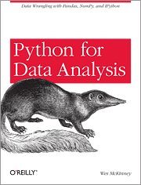

All You Need is Pandas
Unexpected Success Stories
Dimiter Naydenov
About me
from Bulgaria.Sofia import Dimiter.Naydenov
- tags:
Python,Emacs,Go,Ubuntu, Diving, Sci-Fi - company:
develated
Pandas?
import pandas as pd

- Open source (BSD-licensed) Python library
- Created by Wes McKinney in 2008
- High-performance, easy-to-use data structures
- Great API for data analysis, built on top of NumPy
- Well documented: pandas.pydata.org/pandas-doc/stable/
Pandas: Personal Favourites
- Easy to install, very few requirements
- Fast as NumPy, yet more flexible and nicer to use
- Reads/writes data in the most common formats
- Works seamlessly with matplotlib for plotting
Pandas: Personal Pain Points
- Good documentation, but not a lot of tutorials
- Confusingly many ways to do the same thing
- Arcane indexing, even without MultiIndex
- Sane defaults, but can be "too smart" in some cases
SVG Mail Labels Generator
Goal: Send personalized mail, labeled in sender's handwriting.
Requirements
- Acquire samples of users' handwriting as SVG files
- Extract individual letter/symbol SVGs from each sample page
- Compose arbitrary word SVGs using the letters
- Generate mail label SVGs from those words
Acquiring Handwriting Samples
Example Input
Excerpt of a user's SVG sample page.
Example Output
Generated SVG mail label for another user.
Processing
Parsing
Problem: Extracting pen strokes from SVG XML
Solution: I found svgpathtools which provides:
- Classes:
Path(base),Line,CubicBezier,QuadraticBezier - API for path intersections, bounding boxes, transformations
- Reading and writing SVG lists paths from/to SVG files
import svgpathtools as spt
def parse_svg(filename):
paths, attrs = spt.svg2paths(filename)
# paths: list of Path instances
# attrs: list of dicts with XML attributes
return paths, attrs
DataFrame Creation
import pandas as pd
def gen_records(svg_paths):
for i, path in enumerate(svg_paths):
xmin, xmax, ymin, ymax = path.bbox()
yield dict(org_idx=i, xmin=xmin, ymin=ymin,
xmax=xmax, ymax=ymax, path=path)
def load_paths(filename):
paths, _ = parse_svg(filename)
return pd.DataFrame.from_records(gen_records(paths))
| orgidx | xmin | ymin | xmax | ymax | path |
|---|---|---|---|---|---|
| 0 | x0 | y0 | X0 | Y0 | p1 |
| … | |||||
| n-1 | xn-1 | yn-1 | Xn-1 | Yn-1 | pn-1 |
Letter Extraction
Problem: Compare each stroke with all nearby strokes and merge as letters
Solution: DateFrame iteration and filtering (over multiple passes)
def merge_letters(df, merged, unmerged):
merged = set([])
unmerged = set(df.loc['org_idx'].tolist())
df = merge_dots(df, merged, unmerged)
df = merge_overlapping(df, merged, unmerged)
df = merge_crossing_below(df, merged, unmerged)
df = merge_crossing_above(df, merged, unmerged)
df = merge_crossing_before(df, merged, unmerged)
df = merge_crossing_after(df, merged, unmerged)
return df, merged, unmerged
Merging Fully Overlapping Paths
def merge_overlapping(df, merged, unmerged):
"""Merges paths whose bboxes overlap completely."""
for path in df.itertuples():
candidates = df[(
(df.xmin < path.xmin) &
(df.xmax > path.xmax) &
(df.ymin < path.ymin) &
(df.ymax > path.ymax) &
)]
df = merge_candidates(df, path.Index, candidates.org_idx.values, merged, unmerged)
return update_data_frame(df)
Updating After Each Pass
def update_data_frame(df):
"""Calculates additional properties of each path."""
return (df.assign(
width=lambda df: df.xmax - df.xmin,
height=lambda df: df.ymax - df.ymin).assign(
half_width=lambda df: df.width / 2,
half_height=lambda df: df.height / 2,
area=lambda df: df.width * df.height,
aspect=lambda df: df.width / df.height)
.sort_values(['ymin', 'ymax', 'xmin', 'xmax']))
Classification
- Manual process (deliberately)
- External tool (no Pandas :/)
- Loads merged unclassified letters
- Shows them one by one and allows adjustment
- Produces labeled letter / symbol SVG files
Word Building
- Input: any word without spaces (e.g.
testing) - Selection: for each letter, picks a labeled variant
- Horizontal composition: merges selected variants with variable kerning
- Vertical alignment: according to the running baseline of the word
- Output: single word SVG file
Example (showing letter bounding boxes and baseline)
Labeling
- Input: Excel file with mail addresses
- Structure: one row per label, one column per line
- Parsing: as simple as
pd.read_excel() - Generation: builds words with variable spacing (for each column)
- Alignment: with variable leading (vertical line spacing)
What I Learned: All You Need is Pandas!
- Pandas is great for any table-based data processing
- Learn just a few features (filtering, iteration) and use them
- Understand indexing and the power of
MultiIndex - Dealing with CSV or Excel I/O is trivial and fast
- Docs are great, but there is a lot to read initially
- Start with 10 Minutes to pandas
Questions ?
How to get in touch:
One more thing,
buy Wes McKinney's book "Python for Data Analysis" (seriously)
